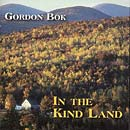

Reviews of Gordon Bok's Music
- Other Eyes
- Gordon Bok in Concert
- In the Kind Land
- Neighbors
- Harbors of Home
- Schooners
- Concert Reviews
- Quotable Reviews
- Support The Arts
In the Kind Land
by Gordon Bok
THD-CD011, (c) (p) 1999
available at Timberhead Music
WBUR-FM Review by Scott Alarik
Broadcast on "Here and Now", January 17, 2000
Re-published by kind permission of the author and WBUR-FM, Boston
Text of the WBUR-FM Review by Scott Alarik
In a secluded hilltop house outside the coastal town of Camden, Maine, lives folk singer, songwriter, wood-carver and sometime ship-builder Gordon Bok.
For nearly 40 years, he has written, collected and recorded songs of the sea. But he does not trade in the yo-ho-ho exuberance we so often hear in maritime music; he sings about the real people he knows; honest, hardworking fishermen, loggers, sailors and shipbuilders, family people who wrestle daily with the harsh elements and even harsher economics.
In his quiet way, Bok is a supreme innovator, both as songwriter and guitarist. With Maine instrument-maker Nick Apollonio, he has developed a gentle breed of 12-string guitar tamed to the quiet rigors of the folk ballad. He has also invented his own bassy recorder - called a Bokwhistle - developed the seldom-heard cellamba into an exquisite rhythm instrument, and plays the nylon-string guitar with rare power and texture. Bok's guitar is never just an accompanist; it becomes part of the song's landscape, used to chart character, mood, even plot shifts. In his lonely classic "Bay of Fundy," listen how the guitar is the cold sea lapping up on the boat, then a distant foghorn, and once again the restless, relentless ocean.
Bok also loves the traditional myth and lore of the sea. He has invented his own song form, dubbed cante-fables, in which spoken word, song and music combine to tell epic tales; often involving the ancient Atlantic legend of the seal-folk, changelings who live as seals on the water, and humans on land. The best known of these cante-fables is "Peter Kagan and the Wind," about a sailor who bravely but arrogantly battles the wind and sea in a boat too small for the storm rising around him; only to be saved by his wife, who is one of the seal-folk. Bok is the narrator and voice of Kagan, the guitar the wind and sea.
For all his auteur originality, Bok loves to collaborate. To him, folk is a plural word, defining a music shared by communities and used to express their lives together. His best known collaborations have been with singers Ed Trickett and Ann Mayo Muir, but in 1996, he joined Maine folk singer Cindy Kallet for a darkly sweet, mostly traditional CD called "Neighbors." Here, they take a rowdy old pub standard called "Farewell to Nova Scotia," and tenderly restore it to the soft lament its original author surely meant it to be.
Bok had a brief taste of commercial fame in the early '60s, just enough to disgust him with the pop music industry and send him back to his native Camden. Music to him is not so much a career as a way of belonging to a community. Like the resourceful people around him, he does his work in his way and in his time, building his own tools when the store-bought ones don't suit him; writing his own songs when the store-bought ones don't tell his truth. The title cut of his latest CD, "In the Kind Land," is classic Bok; equal parts mythic fancy and hardscrabble reality. He could be lamenting the dwindling role tradition plays in our noissome and cynical times. Or he could be speaking for his neighbors, so many of whose lives are being displaced by the careless gentrification of their coastal home. He is probably singing for them both; he always has.
--Scott Alarik also is a folk music writer for the Boston Globe, was editor of the New England Folk Almanac, and has written about Gordon Bok for Sing Out!, the Boston Globe, the Folk Almanac and the Black Sheep Review.